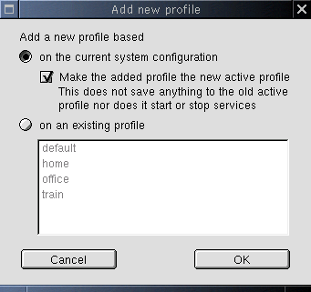

Add Profile Popup
This window pops up when the user clicks Add in the main dialog.

General information
This popup lets the user add new profiles by either creating one
from the current system configuration or by copying an existent profile.
Getting information
All informtion is already available.
Actions to perform
- Cancel
Closes the popup without doing anything. (Back to
main)
- Ok
This will launch the Special Profile
Settings dialog. Remember the information from this popup. All actions can
not be executed until we get the name of the new profile in the Special Profile Settings dialog.